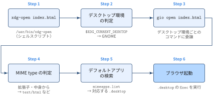

1. Editing
1.1: 行・ブロックの移動
Shift 選択 → Alt + ↑/↓
Shift+↑/↓で移動させたい行を範囲選択するAltを押しながら↓/↑で選択範囲ごと移動する- 選択範囲は移動後も保持されるので，
Alt+↓を連打して任意の位置まで送れる - 1行だけ動かす場合は範囲選択不要で
Alt+↑/↓のみでよい
# before: バリデーションが計算の後に来てしまっている
def process(records):
total = sum(r["amount"] for r in records)
if not records: # <- この2行を選択して
raise ValueError("empty records") # <- Alt + ↑ を2回
return total| command | 動作 | comment |
|---|---|---|
Alt + ↑/↓ |
カーソル行 or 選択範囲を上下に移動 | インデントは移動先の文脈に合わせて自動調整される |
Shift + Alt + ↑/↓ |
カーソル行 or 選択範囲を上下に複製 | 移動ではなくコピー |
系 1.1.1: 離れた行への転記
Alt+↑/↓は隣接行の入れ替えには強いが，「line 30 のブロックを line 100 に移したい」のように距離があるときは連打が非効率- この場合は 切り取り → ジャンプ → 貼り付け の3ステップに分けるほうが速い
Ctrl + X → Ctrl + G → Ctrl + V
Ctrl+X: 選択範囲（未選択ならカーソル行全体）を切り取るCtrl+G: Go to Line 入力を開き，行番号（例100）を入れてEnterでジャンプCtrl+V: 貼り付け
Ctrl + G は行番号だけでなく 100:5（100行5桁目）の形式も受け付ける． また Ctrl + P のQuick Openで filename.py:100 と打てば，別ファイルの特定行へ直接飛べるので，ファイル間の転記にも同じ手順が使える．
| command | 動作 | comment |
|---|---|---|
Ctrl + G |
指定行へジャンプ | :区切りで桁指定も可能 |
Ctrl + Home/End |
ファイル先頭/末尾へ移動 |
2. 移動
2.1: Directory 作成後の Explorer でのフォーカス
Ctrl + クリック
- VS Code の統合ターミナルは出力中のファイル・ディレクトリのパスをリンクとして検出する
- 下の例なら
pwdの出力に出てきた絶対パスをCtrl+ クリックする - ワークスペース内のディレクトリであれば，Explorer でそのディレクトリが展開・選択された状態になる
ターミナルで新しいディレクトリを作って cd したあと，Explorer でもそのディレクトリを開きたいことがあります． Explorer のツリーを上から辿るのは手間なので，ターミナルに表示されているパスをそのまま使えば，Explorer でフォーカスできます．
% mkdir 2026-10-17-python-backend-build
% cd !^
cd 2026-10-17-python-backend-build
% pwd
/home/hogehoge/posts/2026-10-17-python-backend-build # ← これをctrl + click2.2: VSCode workspaceからHTMLファイルをデフォルトブラウザで開く
# Mac
open index.html
# Linux
xdg-open index.html # openコマンドでもokxdg-openとは，ファイルやURLを，ユーザーが設定したデフォルトアプリケーションで開くコマンド
xdg-open index.html # HTMLファイル → デフォルトブラウザ
xdg-open report.pdf # PDF → デフォルトのPDFビューア
xdg-open . # ディレクトリ → ファイルマネージャー
xdg-open https://quarto.org # URL → デフォルトブラウザなぜLinuxでも open コマンドで開けるのか？
Ubuntuでは /usr/bin/open がalternativesシステム経由で xdg-open へのシンボリックリンクになっています．
% ls -l $(which xdg-open)
-rwxr-xr-x 1 root root 26075 Aug 1 2022 /usr/bin/xdg-open*
% ls -l $(which open)
lrwxrwxrwx 1 root root 22 Jul 15 2023 /usr/bin/open -> /etc/alternatives/open*
% ls -l /etc/alternatives/open
lrwxrwxrwx 1 root root 17 Jul 15 2023 /etc/alternatives/open -> /usr/bin/xdg-open*open→/etc/alternatives/open→/usr/bin/xdg-openの順にリンクが辿られ，最終的にxdg-openが実行されるxdg-openはファイルの種類（MIME type）に応じて，デスクトップ環境で設定されたデフォルトアプリケーションで開くコマンド．HTMLファイルならデフォルトブラウザが起動する
3. Settingsの観点
General
search.exclude，「見張らないもの」は files.watcherExclude に登録する
search.exclude: 全文検索・Quick Open（Ctrl+P）の走査対象から外すfiles.watcherExclude: ファイル変更監視（file watcher）の対象から外す- どちらも glob パターンをキー，
trueを値にして指定する
| 設定 | 除外されるもの | Explorer 表示 | comment |
|---|---|---|---|
files.exclude |
Explorer 表示・検索の両方 | 非表示 | ファイルの存在自体を隠したいとき用．検索からも外れる |
search.exclude |
全文検索・Quick Open | 表示される | ファイルは開けるが検索には出てこない |
files.watcherExclude |
ファイル変更監視 | 表示される | 外部プロセスによる変更が Explorer やエディタに自動反映されなくなる |
search.exclude の効能
"search.exclude": {
"data/**": true,
"**/*.parquet": true
}この設定をすると
Cmd+Shift+Fでuser_idを検索しても，data/train.csvなどの一致は結果に出ず，コードの一致だけが並ぶdata/配下や.parquetファイルを走査しなくなるので，検索が速くなるCmd+P（Quick Open）の候補からも外れる- エクスプローラーには表示されたままで，クリックすれば開ける
なお，search.useIgnoreFiles が true（デフォルト）なら，.gitignore に書いたパスは指定しなくても検索から外れてます.gitignore していないファイルを検索から外したいときにだけ設定します．
files.watcherExclude の効能
"files.watcherExclude": {
"data/**": true,
"mlruns/**": true,
"outputs/**": true
}この設定をすると
- 学習ジョブが
mlruns/に大量にログを書き込んでも，VS Code がその変更イベントを処理しなくなり，CPU やメモリの消費が抑えられる data/に数万ファイルがあっても，監視上限の警告（Linux の inotify 上限など）が出にくくなるoutputs/に新しいファイルができてもエクスプローラーにすぐ出てこない（更新ボタンで反映）
なお，.gitignore に書いてあっても監視はされるので，監視を止めたい場合は明示的に記載することが必要です
Python
| カテゴリー | 項目 | 設定値 | 挙動 |
|---|---|---|---|
| Jupyter | jupyter.notebookFileRoot |
"${fileDirname}" |
Notebook / Interactive Window のカーネルの作業ディレクトリを，開いているファイルのディレクトリにする．相対パスでの open() や read_csv() はファイル位置基準で解決される |
| Jupyter | jupyter.interactiveWindow.creationMode |
"perFile" |
# %% セル実行時の Interactive Window を .py ファイルごとに1つ作る．ファイル間でカーネル・変数は共有されない |
| Terminal | python-envs.terminal.autoActivationType |
"off" |
新しいターミナルを開いても venv を自動 activate しない（uv run 運用前提） |
| Pylance | python.analysis.ignore |
["**/Interactive-*.interactive.py"] |
Interactive Window が内部生成する一時ファイルに対して Pylance の診断を出さない |
| Pylance | python.analysis.diagnosticSeverityOverrides |
{ "reportAssignmentType": "warning" } |
宣言型と互換性のない代入を error ではなく warning として表示する |
| Formatter | [python] > editor.defaultFormatter |
"charliermarsh.ruff" |
Python ファイルの「ドキュメントのフォーマット」で Ruff を使う |
4. Extensions
Editorconfig
.editorconfig を VS Code に効かせるために EditorConfig 拡張（EditorConfig.EditorConfig）を入れる
- VS Code は
.editorconfigをネイティブには読まないので，拡張を入れないとリポジトリに.editorconfigを置いても無視される - 拡張を入れると，ファイルを開いた・保存したタイミングで
.editorconfigの改行コード・インデント・末尾改行などの設定が適用される - 既存の
settings.json（files.eolやeditor.tabSizeなど）よりも.editorconfigの値が優先される
VS Code はネイティブ対応していない
- EditorConfig 公式サイト には「No Plugin Necessary」というセクションがあり，「These editors come bundled with native support for EditorConfig.」としてネイティブ対応のエディタが一覧になっている
- Visual Studio Professional・Vim・Neovim・JetBrains 系の IDE などは含まれているが，VS Code は含まれていない
- VS Code は「Download a Plugin」側に分類されており，
.editorconfigを効かせるには EditorConfig 拡張（EditorConfig.EditorConfig）のインストールが必要
なぜ設定するのか？
- OS やエディタ設定の違いによる書き方のゆらぎを，リポジトリ側のルールとして固定できるため
例えばリポジトリのルートに次のような .editorconfig を置きます．
# top-most EditorConfig file
root = true
# Unix-style newlines with a newline ending every file
[*]
end_of_line = lf
insert_final_newline = true
# Matches multiple files with brace expansion notation
# Set default charset
[*.{js,py}]
charset = utf-8
# 4 space indentation
[*.py]
indent_style = space
indent_size = 4この設定をすると
end_of_line = lf: Windows のエディタはデフォルトで改行コードを CRLF にしがちだが，Windows・Mac・Linux のどこで編集しても LF に揃うinsert_final_newline = true: 保存時にファイル末尾へ改行が入るので，人によって末尾改行があったりなかったりする状態がなくなるcharset = utf-8:.js・.pyの文字コードが UTF-8 に揃い，Windows 環境で Shift_JIS などで保存されて文字化けする事故を防げるindent_style = space/indent_size = 4:.pyのインデントが4スペースに揃い，タブとスペースの混在が起きない
editorconfigを導入しないデメリット
ゆらぎを放置すると，不要な git diff が発生します．
- 1行しか直していないのに，改行コードが CRLF ↔︎ LF で変わったせいでファイル全行が差分として表示される
- 末尾改行の有無が変わるたびに
\ No newline at end of fileの差分が出る - インデントのタブ・スペースが変わると，見た目は同じなのに行全体が変更扱いになる
markdownlint
DavidAnson.vscode-markdownlint）は使わない
- 執筆中に lint の warning が常に表示され，内容を書くことへの集中が削がれる
- 編集のたびに lint が走るので，CPU・メモリのリソース負荷がかかる
- 既にインストール済みなら，Extensions ビュー（
Ctrl+Shift+X）から Uninstall または Disable する
warning が busy で集中が切れる
- markdownlint は見出し前後の空行，行長，リストのインデント，HTML タグの使用などを細かくチェックし，該当箇所に波線を引いて Problems パネルに warning を並べる
- 文章を書いている最中に波線や Problems の件数が目に入ると，つい体裁の修正に手が止まり，内容を考える思考が途切れる
- 体裁は レンダリング結果を見て確認すれば十分で，執筆中にリアルタイムで指摘される必要はない
lint によるリソース負荷
- markdownlint はデフォルトで入力のたびに（
markdownlint.run: "onType"）開いている Markdown ドキュメントを再解析する - lint 処理は Extension Host プロセス上で動くため，長い記事を書いているときや複数ファイルを開いているときは，その分 CPU・メモリを消費する
- Extension Host が重くなると，補完や他の拡張機能の応答も遅くなる
どうしても lint を使いたい場合は，"markdownlint.run": "onSave" にして保存時だけ走らせると，入力中の warning 表示と負荷はある程度抑えられる．
Appendix : xdg-open の動作
xdg-open 自体はファイルを開く処理を持たず，「どのデスクトップ環境か」を判定したうえで，そのデスクトップ環境のコマンドに処理を委譲します．GNOME（Ubuntuの標準）の場合の流れは以下

xdg-open index.html からブラウザが起動するまでの流れ（GNOMEの場合）| Step | 処理 | 内容 |
|---|---|---|
| 1 | xdg-open の実行 |
/usr/bin/xdg-open が引数のファイルパスを受け取る |
| 2 | デスクトップ環境の判定 | 環境変数 $XDG_CURRENT_DESKTOP（例: ubuntu:GNOME）を見て，GNOME / KDE / Xfce などを判定する |
| 3 | コマンドへの委譲 | GNOMEなら gio open，KDEなら kde-open のように，デスクトップ環境ごとのコマンドを呼ぶ．どれにも該当しなければ xdg-open 自身の汎用処理（open_generic）で開く |
| 4 | MIME typeの判定 | 拡張子やファイルの中身から，text/html のようなMIME typeを判定する |
| 5 | デフォルトアプリの検索 | ~/.config/mimeapps.list などから，MIME typeに対応する .desktop ファイル（例: firefox.desktop）を探す |
| 6 | アプリの起動 | .desktop ファイルの Exec= に書かれたコマンドに，ファイルパスを渡して実行する |
デフォルトアプリの確認と変更
Step 4・5で何が選ばれるかは xdg-mime コマンドで確認・変更できます．
# Step 4: ファイルのMIME typeを確認
% xdg-mime query filetype index.html
text/html
# Step 5: MIME typeに対応するデフォルトアプリを確認
% xdg-mime query default text/html
google-chrome.desktop
# デフォルトアプリを変更（~/.config/mimeapps.list に書き込まれる）
% xdg-mime default firefox_firefox.desktop text/html